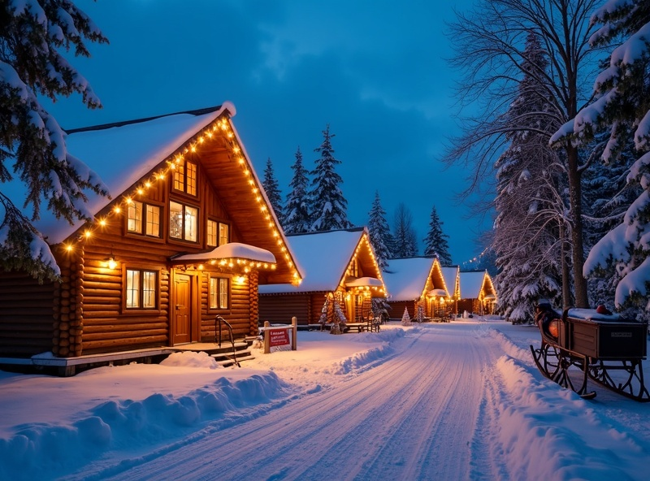
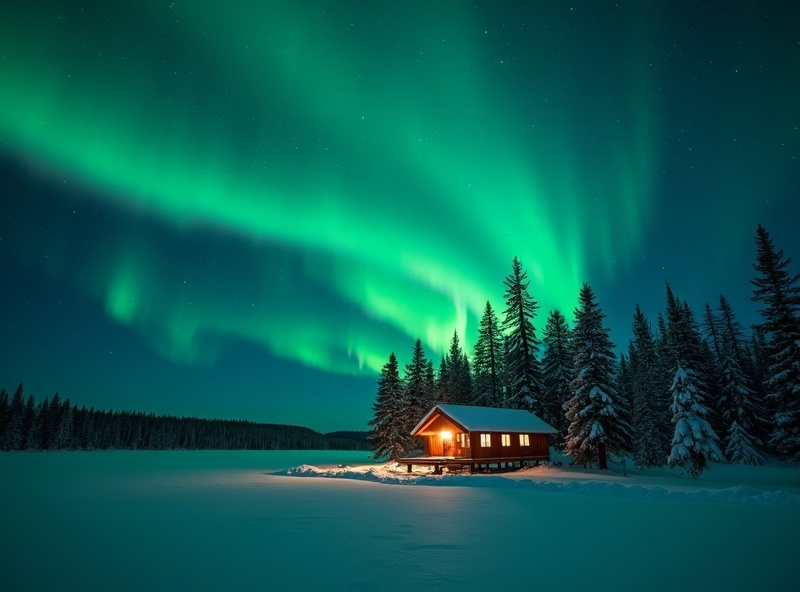
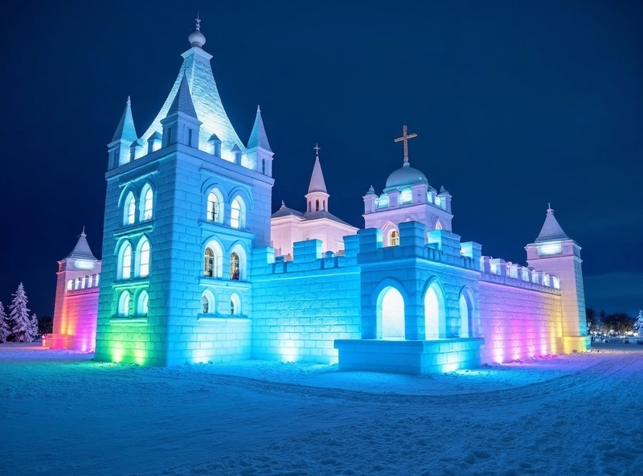

全球最知名的玻璃屋極光體驗
芬蘭拉普蘭發明了玻璃圓頂極光屋，免去寒冷等待，在床上就能賞極光。
OVERVIEW
芬蘭拉普蘭 — 聖誕老人的故鄉，也是全世界最夢幻的極光住宿體驗發源地。躺在溫暖的玻璃圓頂屋內，蓋著軟毯仰望北極光整夜流轉，是許多人一生 To-do List 上的頭號項目。從赫爾辛基的文化洗禮到拉普蘭的雪原歷險，芬蘭是一場極光與童話交織的旅程。
芬蘭拉普蘭發明了玻璃圓頂極光屋，免去寒冷等待，在床上就能賞極光。
馴鹿雪橇、哈士奇雪橇、冰釣、雪鞋健行 — 芬蘭冬天的玩樂比你想像中更多。
芬蘭人的慢活哲學與自然連結，讓整趟旅程充滿療癒感。
跨越北極圈線、寄出蓋有北極圈郵戳的明信片，把童話帶回家。
MUST VISIT

景點 1
跨越北緯 66°33' 的北極圈線，和真正的聖誕老人見面、從北極圈郵局寄出一張獨特的明信片 — 無論冬季夏季，這裡都是童話的入口。

景點 2
芬蘭拉普蘭北部最大的湖泊，冬季湖面完全結冰成為極佳的極光觀測台。周邊幾乎無光害，是追求高品質極光觀測者的首選。

景點 3
每年冬天用海水和冰雪重建的巨型城堡，內有冰雕藝廊、冰雪教堂和冰屋客房。白天探索冰雪奇蹟，晚上回到自己溫暖的玻璃屋追極光。
9 月～隔年 3 月
北極圈內大陸性氣候。冬季極寒乾冷，平均 -15°C ~ -5°C，拉普蘭地區可達 -30°C
冬季白天約 -8°C ~ -3°C，夜間 -20°C ~ -5°C
TRAVELER STORIES
「玻璃屋比想像中溫暖，晚上躺在床上就看到極光劃過天空，值回票價，行前顧問也回覆得很快。」
「芬蘭拉普蘭的寧靜感太難忘了，從哈士奇雪橇到桑拿浴再到玻璃屋，每天都有驚喜。極光在零下 25 度的澄澈天空中跳了整晚，畫面現在還在腦中。」